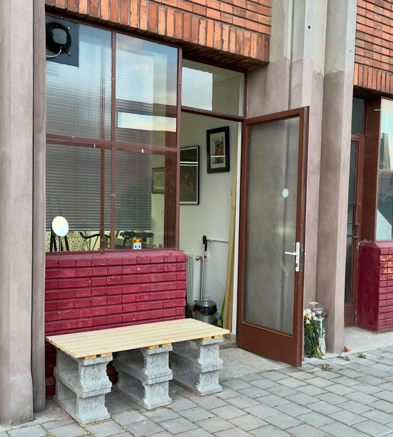
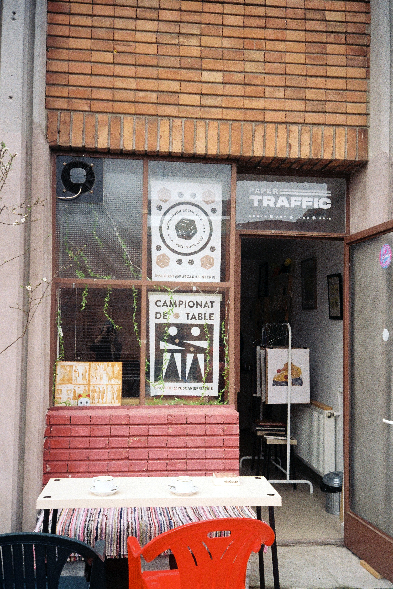
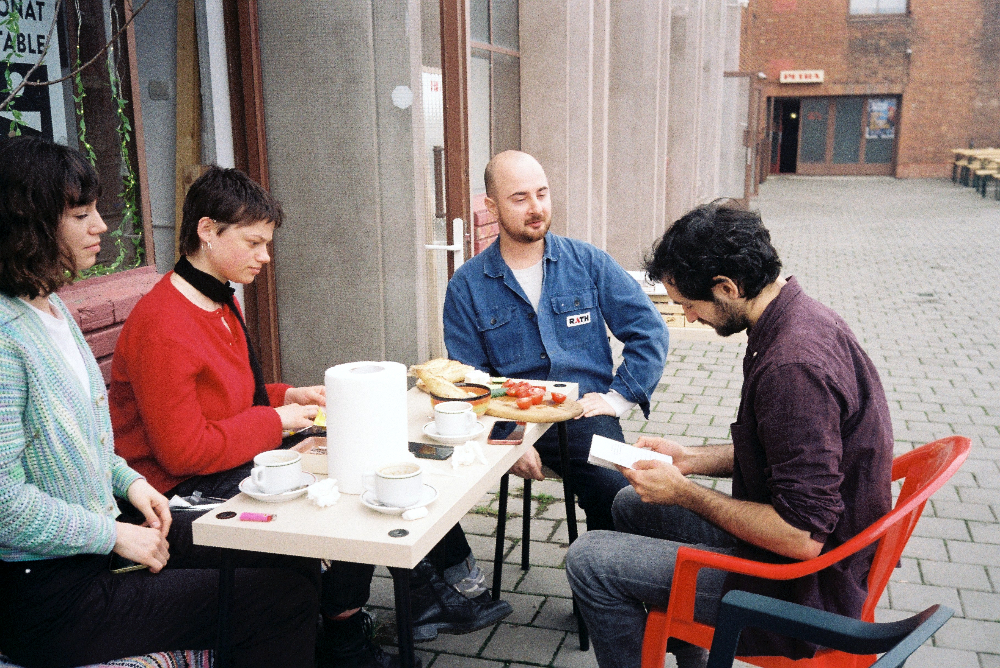
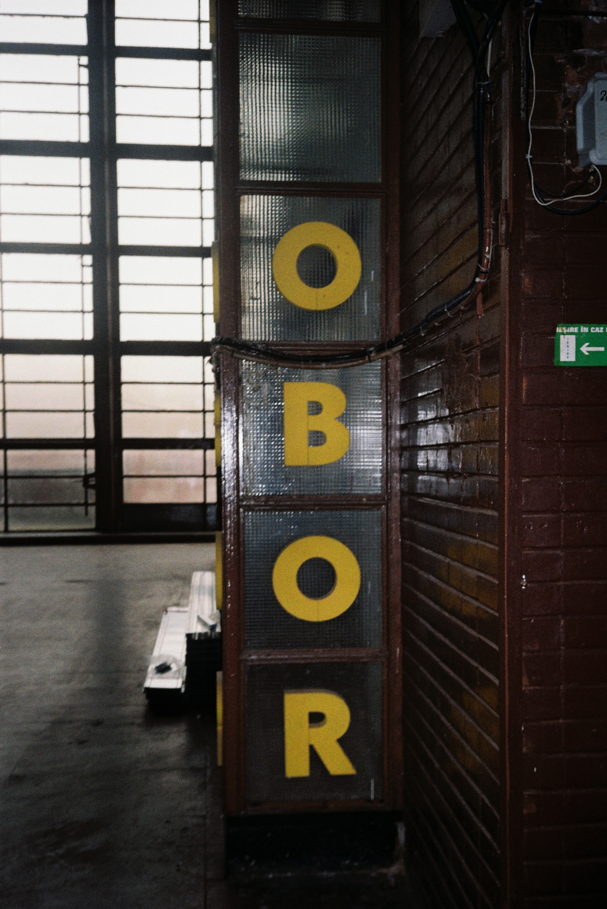
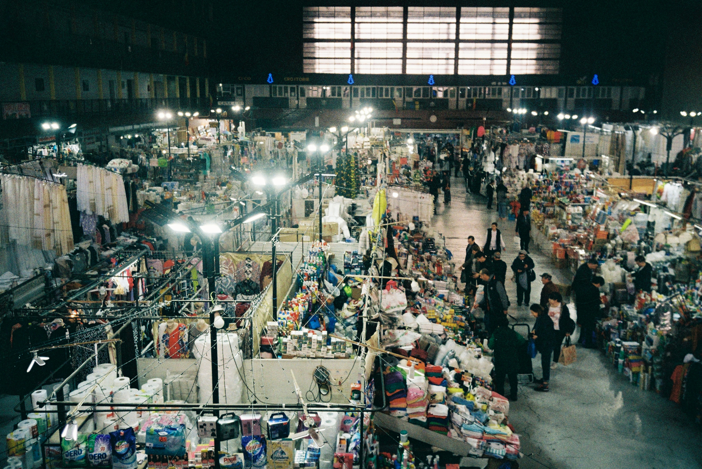

Într-o piață, hârtia nu are un destin prea măreț. Ea șterge zeama lăsată de fructe și legume, împachetează cârnați și mezeluri, sau este chitanța pe care o mototolești din momentul în care ți-a ajuns în mână. Într-un mediu dominat de umezeală, căldură și fum, de agitație și de zarvă, ai fi surprins să găsești o librărie.
Și totuși, dacă intri în clădirea veche a Halelor Obor, navighezi printre standuri și urci pe scara de metal până la etaj, iar apoi o iei pe lângă frizerie și magazinul de produse agricole și ieși pe terasă, vei da de librăria Paper Traffic.
Cel puțin așa ne-a asigurat Vlad Mihai, fondatorul editurii. Am vrut să o vedem cu ochii noștri, și eventual să facem și piața, de ce nu, așa că am plecat într-o sâmbătă, cât s-a putut de dimineață, cu tramvaiul 10 spre Obor.
Deja după Iancului, tramvaiul începe să se aglomereze sesizabil. Majoritatea celor care urcă sunt pensionari care trag după ei cărucioare de cumpărături pliate, căptușite cu pungi. Când ne apropiem de stația Obor, atmosfera se tensionează și apar primele conflicte: oamenii se acuză între ei că nu se mișcă suficient de repede înspre uși, sau că se bagă în față. Tramvaiul oprește în stație și pentru câteva secunde se așterne liniștea. Ușile se deschid și călătorii dau năvala afară, reluând protestele. Cărucioarele se desfac din mers, pe deasupra capetelor, iar când roțile de plastic înțeapă asfaltul, se creează un zumzet care ne învăluie.
Mergem spre Obor în grup compact, într-un ritm la limita alergării, care, pesemne că văzut de sus, ar semăna cu formațiile în V ale păsărilor călătoare. Când ajungem aproape de intrarea în piață, ieșim din formație ca să o așteptăm pe Maria, care face ilustrațiile pentru proiect. Ne-am dat întâlnire în fața unui punct de reper ales pe moment, „lângă terasa cu bere și mici, pe care scrie Neumarkt, e cu verde”. Între timp, grupul nostru din tramvai a fost absorbit fără urmă în agitația pieței.
Oborul supraviețuiește, în varii forme, de mai bine de 300 de ani. Altfel spus, în piața Obor s-a plătit atât cu galbeni, cât și contactless cu telefonul. Când privești în acest hău de timp și de vieți, mintea începe să-ți vâjâie. Însă, față de alte locuri cu o istorie lungă, Oborul are ceva atipic. Înconjurat de zarva și agitația care te învăluie, e greu să pui degetul pe ce anume a rezistat de atâta vreme. Aici totul este în tranziție, de la proaspăt la stricat, de la crud la gătit, de la o mână, la alta. Nimic nu pare să stea locului și simți că orice repaos este încărcat cu tensiunea următoarei mișcări. Așadar, ce, mai exact, rezistă de peste 300 de ani aici, unde totul este atât de schimbător?
Istoria Oborului nu face decât să adâncească problema. Înființat prin secolul 17, Oborul a fost mai întâi un târg în care se vindeau vite. Cum sacrificarea animalelor ridica probleme sanitare, târgul a fost mutat la periferia de atunci a orașului. Pe lângă animale, până în 1823, pe străzile Oborului pășeau și condamnații la spânzurătoare: tâlhari, trădători, complotiști. Exista chiar o tradiție conform căreia cei din piață îi ofereau condamnatului vin în drum spre spânzurătoare, ca să-i mai treacă frica. Urmă a acestor momente a rămas doar crucea de piatră pe care o poți vedea în fața primăriei. Ea a fost ridicată de negustori pe la finalul secolului 19 ca să sfințească locul pângărit de execuții. A urmat apoi o perioadă mai festivă, în care Oborul a găzduit Târgul Moșilor, care atrăgea mulțimile cu promisiunea distracțiilor pe care le oferea: mâncare, băutură, muzică, bragă și dulciuri sau spectacole de circ și magie.
Așa cum observa cu nostalgie un jurnalist din interbelic, atracția târgului pălise aproape complet când, în 1936, a început construcția Halei Obor, sub conducerea arhitecților Horia Creangă și Haralamb Georgescu, ce avea să se termine abia în 1950. În 2007, vechea piață a fost demolată, iar în locul ei s-au ridicat noile Hale Obor.
O reperăm pe Maria, ne terminăm cafelele, și o luăm spre librăria Paper Traffic prin vechea Hală. De cum intri, te izbește diversitatea de obiecte și de culori. Mai întâi dai de tarabe cu tot felul de șuruburi și țevi, aparate electrice sau ustensile de grădinărit, și maldăre de unelte de bucătărie destinate nevoilor celor mai specifice. Dacă avansezi, găsești și piramidele făcute din borcane de muștar și conserve de mazăre sau fasole, și inclusiv un zigurat de dimensiuni impresionante, creat din produse de curățenie casnică.
Mai spre centrul halei se află zona dedicată hainelor și stofelor. Aici, configurația standurilor își pierde caracterul geometric în favoarea celui sinuos. La unul dintre standuri, un șir de pufoaice în culori terne atârnă la un metru deasupra capului, cu mânecile adânc îndesate în buzunare, simulând așteptarea în stația de tramvai. Iar de jos, din spatele a câteva zeci de umerașe pline, te fixează ochii negri de damă ai singurului manechin cu cap din mijlocul unei grupări de manechine îmbrăcate lejer, în cămășuțe de vară. Pare că ar fi liderul lor.
La capătul halei găsești standurile cu bomboane vrac și tot felul de dulciuri, cu semințe și nuci, și, mai nou, două magazine de condimente orientale, la care se formează cozi lungi de indieni, nepalezi sau pakistanezi. Lângă ele, dar mult mai puțin popular, se află și un magazin de brânzeturi cu galantare vechi și gresie albă, la care servesc niște doamne îmbrăcate în halat, cu băscuțe pe cap.
Ne forțăm să ne desprindem de atracția ciudată pe care ne-o provoacă toate aceste produse și urcăm pe scara metalică care ne duce la etaj. Privită de sus, varietatea de culori a obiectelor puse la vânzare se pierde și converge spre un argintiu sclipitor, iar hala capătă o ordine vizuală neașteptată. Facem câteva poze și mergem mai departe.
Librăria lui Vlad e prima pe dreapta, cum ieși pe terasă. Când intrăm în camera de 5 pe 5 a librăriei, Vlad e cu spatele și deznoadă niște pungi în care întrezăresc niște roșii și brânză.
Diversitatea care te întâmpină în mica librărie Paper Traffic rimează în felul ei cu varietatea Oborului. Lângă volume cu design sofisticat, găsești cărți vechi de anticariat, pistoale cu apă, un set de table, tablouri, dar și un scaun de tuns, cu toate cele.
În timp ce Vlad pune de un platou old school, cu roșii, brânză și ceapă luate de la sursele lui de încredere, îl întreb de două tablouri care mi-au atras atenția. Primul înfățișează o imagine serenă, în culori pastelate, cu niște mesteceni în ceea ce pare a fi un parc urban. Al doilea îl arată pe Mike „I will eat your kids ” Tyson, în timp ce lansează unul dintre croșeele violente care i-au câștigat renumele de „The baddest man on the planet”. Ce mă frapează e că atât Iron Mike, cât și mestecenii sunt pictați în același stil pastelat și visător, care îți dă senzația unei suspendări nostalgice în timp. E ca și cum pictorul ar fi vrut să insiste că cele două realități aparțin aceleiași lumi. Îl întreb pe Vlad dacă într-adevăr e mâna aceluiași pictor și îmi zice că da, că e vorba de un pictor din Moldova, care ziua lucrează ca ofițer într-un penitenciar, iar în timpul liber pictează furibund. Este unul dintre artiștii cu care colaborează de câțiva ani și căruia îi expune frecvent picturile în librărie.
Ne așezăm cu Vlad la măsuța din fața librăriei, în jurul unui platou impresionant, și primul lucru de care îl întrebăm este de scaunul de tuns. Totul a început acum 10 ani, ne povestește el, când și-a făcut mâna pe niște prieteni cu care locuia în Sălăjan. Ușor, ușor, a început să-i tundă și pe prietenii prietenilor, până când, în pandemie, a ajuns să se deplaseze cu bicicleta ca să-i tundă și pe bunicii și nepoții lor. „La un moment dat când m-am mutat la mine în casă aveam o cameră care era frizerie, toată camera. Cu canapea, sală de așteptare, tot ce trebuie, tundeam 3-4 oameni pe zi și în weekend câte 10-12. Intenția a fost să scot frizeria din casă pentru că, ți-am zis, aveam păr sub pernă, păr în frigider”.
Ne spune că a închiriat spațiul librăriei acum 3 ani, cu intenția ca librăria să fie „barca principală”, în timp ce frizeria ar fi jucat rolul uneia dintre „undițe”. Acum a ajuns undița care plătește chiria spațiului: „O carte probabil se vinde o dată la două luni, dar tunsul merge în fiecare weekend”, ne spune el. Clienții se programează pe Instagram și vin să se tundă sâmbăta. Doi sunt programați chiar azi, după-amiază.
Vlad ne spune că unul dintre motivele pentru care a deschis librăria Paper Traffic este că vrea să apropie arta pe hârtie de oameni și să normalizeze raportul lor cu cartea: „În primul rând, încerc să dezamorsez toată ceața asta din jurul cărților, nobilimea asta a obiectului carte”. După o carte ar trebui să întinzi mâna ca după telefon sau laptop, crede el. Să-ți formezi obișnuința de a cere de la ea să-ți ofere ceva, să te schimbe într-un fel. Și către asta tinde și conceptul editorial al cărților publicate de Vlad. Au un aspect intrigant, care te invită să interacționezi cu cartea încă de la nivelul său pur obiectual, poate doar dintr-o curiozitate pur tactilă: „Încerc să fac cărți bine croite, ușor de parcurs, care să îți șoptească ceva înainte să începi să citești”, după cum a zis Vlad într-un alt interviu pe care îl găsiți aici.
Albumele fotografice, cărțile de proză sau poezie, sau lucrările hibrid, care îmbină textul cu fotografia precum Arsenal 01, LAVA sau Sentimatal 76, pe care le poți găsi pe rafturile librăriei Paper Traffic, au toate un concept vizual puternic în spate. Vlad ne spune că în spatele design-ului și conținutului fiecărei cărți se află un back and forth constant cu autorul, o muncă de înțelegere comună a direcției. Ne povestește despre o carte de povestiri asupra căreia a stat aproape un an jumate pentru a-i surprinde direcția: „Am observat că în toate poveștile personajul are un centru emoțional în gât. Adică expresiile prin care își exprimă sentimentele, țin de gât. Nu zice, ‘mi-a fost frică’, zice, ‘mi s-a uscat rădăcina limbii’, sau ‘a avut un nod în gât’, sau ‘mi s-a prăbușit cerul gurii’. Și de asta am numit-o The Globus Effect, după the globus sensation, care înseamnă nod în gât. Am dat o gaură prin carte și ea vine legată cu o ață. Practic tu trebuie să-i desfaci nodul din gât ca să citești cartea.”
„Apropiere” pare să fie cuvântul care surprinde abordarea publicistică a lui Vlad. Ea marchează atât raportul dintre editor și autor care face cu putință procesul colaborativ de creație, dar și raportul cărților cu cititorii. Căci ele „coboară” în întâmpinarea oamenilor din spațiul tradițional rezervat cărții, în locuri neconvenționale, cum ar fi această librărie-frizerie în inima Oborului. Iar acest lucru, în opinia lui Vlad, ajută la normalizarea raportul cu cartea, la integrarea ei în indispensabilul cotidian. Căci, crede el, cartea poate juca un rol specific în metabolismul nostru psihic:
„Eu cred că și ăsta e scopul cărților. Să-ți dea nu informație nouă, ci alte gânduri, nu răspunsuri neapărat, ci poate întrebări mai bune. Să te facă curios sau să te pună în situații noi mai degrabă decât, știi, să-ți dea un răspuns”.
Pe lângă activitatea editorială, librăria joacă și rolul de galerie. Până acum, a găzduit expoziții de ceramică, printuri, și, în ton cu frizeria, o expoziție cu oglinzi și una cu desene cu foarfece. În paralel, mai găzduiește și un campionat lunar de table. Intrarea este 30 de lei și înscrierea se face tot pe Instagram. Următoare ediție va fi chiar mâine, ne spune Vlad. Îl întreb dacă participă și clienții obișnuiți ai pieței la turneu, dar ne spune că aceștia nu urcă la terasă mai deloc. Doar femeile care își fac coafura la frizeria de la etaj mai ies, cu bigudiurile puse, la o țigară, dar cam atât.
Librăria e deschisă doar în weekend, când sunt deschise și celelalte spații de pe terasă. Îl rugăm pe Vlad să ne descrie cum arată un weekend petrecut la librărie:
„Vin pe la 12 și ritualul e descui, scot tot afară, pun muzică, mă duc să fac piața că știu că dacă nu fac piața când ajung, când termin tunsul pe la 4-5, nu prea mai e nimeni în piață. Iar duminica vin doar să stau să mănânc, să fac piața, să fac curat. Adică eu consider că e și ca o casă de la țară, un loc în care vin și fac piața, mănânc, ascult muzică, poate mai dau un mop”.
Ne zice că în ultima vreme e din ce în ce mai dornic să-și petreacă timpul aici: „O săptămână arată mai ok știind că se termină cu asta. Și, în plus, mă bucur să contribui la această decentralizare (a spațiilor culturale)”.
Pe terasă e destul de plin. Lângă Paper Traffic mai sunt o cafenea de specialitate, un bar de cocktailuri și scoici și restaurantul Petra, specializat în mâncare tradițională românească, pe care o prezintă, însă, drept nostalgia food.
Vlad ne povestește că înainte de seria de petreceri Disco Obor, și apoi barul Obor Amor, spațiul era nefolosit de mai bine de 10 ani, fiindcă nimeni nu voia să-și pună taraba aici, departe de „circuitul pieței”. Într-o perioadă, fusese chiar folosit ca spațiu în care dormeau cei care „veneau de la Baia Mare să vândă ceapă cu căruța”. Lucrurile au început să se lege de când cu deschiderea barului Obor Amor și mai ales cu cafeneaua, care atrage un public constant. S-a creat un mic ecosistem aici, în care fiecare local oferă ceva specific, fără să se suprapună cu oferta celorlalte.
Indiferent dacă este vorba despre o librărie, o cafenea de specialitate sau un bar de cocktailuri, chiriile tuturor spațiilor se duc către Societatea Comercială Ci-CO , ne spune Vlad. Se pare că în timp ce numele „Cico” se înfășura subtil cu izul nostalgiei, compania a acționat pragmatic și a virat înspre afacerile imobiliare.
Mă duc să iau niște cafele și mă așez la coada care iese până pe terasă. Pe vremuri, oamenii obișnuiau să se îmbrace cu cele mai frumoase haine atunci când mergeau la târg, tradiție care, sunt surprins să observ, este readusă la viață în plină forță de cei care așteaptă la coadă. Se cântăresc din priviri și se lasă priviți într-un joc subtil pe care nu o să-l întâlnești jos, unde nu se uită nimeni la tine dacă nu are un scop precis.
Norii de fum de la grătarele cu mici de jos se înalță și pătrund în cafenea, dând naștere primelor accese de tuse. Coada se mișcă chinuitor de lent. Scanez încăperea cafenelei și observ ce rol diferit joacă spațiul aici. Dacă la parter ești martorul imaginației baroce cu care vânzătorii reușesc să îndese cât mai multe obiecte într-un spațiu cât mai mic (fără să piardă, totuși, conceptul), aici pare că spațiul este principalul lucru care ocupă rafturile: o sticlă de ulei de măsline extravirgin, spațiu, un borcan cu gem de chilli artizanal, spațiu, o pungă de cafea single origin, spațiu...
Iau cafelele și mă întorc la masă. Îl întreb pe Vlad ce părere are de faptul că publicul pieței și al terasei nu se suprapun. Ne spune că nu i se pare un lucru neapărat rău. „Eu cred că terasa asta aduce niște oameni în piață care n-ar fi venit altfel. Vin oamenii să dea 16 lei pe o cafea și apoi coboară și își iau un mărar, cumpără chestii din piață. Când s-a deschis Petra erau oameni în full training alb, ochelari de soare și pălării mari din nordul Bucureștiului care au venit să vadă the new hip place. `Hai să mâncăm mămăligă!`”.
A auzit frecvent critici cum că terasa ar duce la gentrificarea Oborului. Pentru Vlad, însă, Oborul este greu de urnit din matca lui de doar 4 magazine hip. În plus, crede el, nu e ca și cum prețurile de aici sunt cu mult mai mari decât cele de jos. Oamenii vin la Obor să cheltuie bani, să cumpere și să mănânce, și fie că-și iau o porție de nostalgia food de la Petra cu 40 de lei, sau 4 mici și 2 beri de jos, tot acolo ajung, ne spune el.
În spatele pieței, excavatoarele împing tonele de moloz din clădirile recent demolate. Aflăm de la Vlad că urmează să se ridice un proiect imobiliar de anvergură, care în câțiva ani va da naștere unor complexe rezidențiale de proporții. Deocamdată, noul peisaj fizic, dar mai ales economic și demografic al Oborului este anunțat doar de norii de praf care se ridică în zare și de izbiturile bucăților de ciment care mai străbat prin muzica de la terasă.
Vorbind de schimbări, cea mai sesizabilă este apariția magazinelor de condimente indiene din Hala Obor și a restaurantului srilankez de sub terasă. Vlad ne povestește că restaurantul a început cu o butelie la care se gătea chiar pe trotuar. „Acum vin turiști la ei și au review-uri pe Google. Și sunt ca o comunitate, adică se strâng seara cu bicicletele de Glovo și vin, cântă la chitară, stau, adică a devenit foarte mult locul lor.”
Îl întrebăm ce îi rezervă viitorul librăriei Paper Traffic. Primul lucru de pe listă e să țină niște petreceri de zi, micuțe, în care oamenii care mixează muzica trebuie să compună și un platou cu ce găsesc în piață: „trebuie să ne prezinte selecția de gusturi muzicale și gusturi de mâncare.”
Pentru librărie, Vlad și-a propus să o autonomizeze economic de frizerie și să definească mai bine nișa de preț a artei pe hârtie pe care o vizează, între cea de producție în masă și cea la prețuri prohibitive. În plus, urmează să dezvolte în continuare proiectul de lucrări editoriale locale și să lanseze și alte cărți.
Ne luăm rămas bun de la Vlad, căruia în curând trebuie să-i vină un client la tuns, și o luăm înspre restaurantul srilankez, mânați mai mult de curiozitate, decât de foame. Înainte să coborâm scările, ne rezemăm de balustradă și stăm un pic să ne mai uităm la magazinele de la parter.
Dacă cuprinzi cu privirea standurile de dedesubt, ele capătă forma unui mozaic al vieții cotidiene, al aspectului ei ciclic și general. Din figura care reiese ai impresia că poți reconstitui ceva din viața oricărui om. Căci diversitatea obiectelor pe care le găsești puse la vânzare unele lângă altele capătă un sens atunci când întrevezi prin ele traseul ciclic al vieții de zi cu zi.
Prin mozaicul acesta poți să pătrunzi de cealaltă parte a ferestrelor care punctează blocurile din București și care marchează tot atâtea vieți străine: muștar, ulei, conserve, o plapumă, niște detergent, un cuțit, niște șuruburi, mâncare de pisici, o pereche de șosete și așa mai departe, iar și iar. Ele sunt obiectele care dau un chip metabolismului vieții de azi și care te lasă să surprinzi ceva din conturul cotidianului oricui.
Desigur, dacă piața te ajută să vezi ceva general din om, asta se datorează faptului că piața la rândul ei vine să răspundă nevoilor omului. Conform lui Max Weber, piața și orașul sunt prinse cu o legătură esențială. Mai precis, cel puțin conform conceptului economic de oraș, acesta nu ar fi altceva decât acea așezare omenească care a crescut în jurul unei piețe. Iar cele două se potențează și se reflectă reciproc pe parcursul transformărilor istorice.
Dacă Oborul persistă de trei secole, o face fiindcă reușește să țină pasul cu nevoile vieții cotidiene. E o relație de simbioză între oraș și piață, dar care, judecând după vârsta înaintată a marii majorități a oamenilor care vin astăzi în Obor, pare că riscă ca în câteva zeci de ani să se sfârșească. Nu poți să nu te întrebi dacă condițiile vieții nu s-au schimbat prea mult și prea repede în ultimele decenii, încât formula de piață pe care o propune Oborul să nu mai poată ține pasul. Și totuși, luând ultima gură de flat white în drum spre restaurantul srilankez, mi-e greu să nu constat că poate Oborul a început deja să se adapteze.




